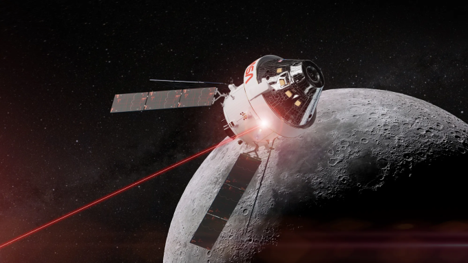

Mỹ – Iran đạt thỏa thuận về ngừng bắn, mở cửa eo biển Hormuz trong hai tuần
Mỹ và Iran đồng ý ngừng bắn trong hai tuần, Tehran sẽ cho phép tàu thuyền đi qua eo biển Hormuz trong thời gian này "với sự điều phối từ lực lượng vũ trăng".
Theo NASA, từ khoảng 18h44 ngày 6/4 (5h44 ngày 7/4 giờ Hà Nội), khi bay qua phía sau Mặt Trăng, tín hiệu vô tuyến và laser - vốn cho phép trao đổi thông tin hai chiều giữa tàu Orion và Trái Đất - sẽ bị chính Mặt Trăng chặn lại, dẫn đến gián đoạn liên lạc. Trong gần một giờ, bốn phi hành gia sẽ trải nghiệm sự tĩnh lặng và cô lập hoàn toàn, lặng lẽ du hành trong không gian tối tăm của vũ trụ. Phi công Victor Glover của nhiệm vụ Artemis II cho biết, ông hy vọng thế giới sẽ sử dụng khoảng thời gian này để đoàn kết lại. "Khi chúng tôi ở phía sau Mặt Trăng, mất liên lạc với mọi người, hãy coi đó là một cơ hội: cùng cầu nguyện, hy vọng, gửi những suy nghĩ và cảm xúc tốt đẹp để chúng tôi có thể kết nối trở lại", ông nói với BBC trước chuyến bay.

Với phi hành đoàn Artemis II, sự gián đoạn với Trái Đất cho phép họ dành toàn bộ sự chú ý vào khám phá Mặt Trăng. Họ sẽ tập trung chụp ảnh, nghiên cứu địa chất, đồng thời quan sát kỹ vẻ đẹp của thiên thể. Tuy nhiên, dưới Trái Đất, đây lại là giai đoạn căng thẳng với nhóm phụ trách duy trì liên lạc. Tại Trạm Mặt đất Goonhilly ở Cornwall, tây nam nước Anh, một ăng-ten khổng lồ đang thu thập tín hiệu từ Orion, cẩn thận xác định vị trí của nó xuyên suốt hành trình và truyền thông tin về trụ sở chính của NASA.
Matt Cosby, Giám đốc công nghệ tại Goonhilly, cho hay: "Lần đầu tiên chúng tôi theo dõi tàu chở người. Chúng tôi sẽ hơi lo lắng khi tàu khuất sau Mặt Trăng, và rồi sẽ rất mừng rỡ khi thấy nó trở lại, biết rằng tất cả đều an toàn". Giới chuyên gia hy vọng sự gián đoạn liên lạc này sẽ sớm được khắc phục thời gian tới, khi NASA cũng như các cơ quan vũ trụ khác bắt đầu xây dựng căn cứ trên Mặt Trăng, đẩy mạnh công cuộc khám phá thiên thể. "Để thiết lập sự hiện diện bền vững trên Mặt Trăng, bạn cần liên lạc đầy đủ 24 giờ một ngày, kể cả ở phía xa, vì phía xa cũng cần được khám phá", ông nói.
Những chương trình như Moonlight của Cơ quan Vũ trụ châu Âu (ESA) dự kiến phóng một mạng lưới vệ tinh xung quanh Mặt Trăng nhằm mang đến khả năng liên lạc liên tục và đáng tin cậy trong tương lai.
Hơn nửa thế kỷ trước, phi hành gia NASA Michael Collins của nhiệm vụ Apollo 11 cũng trải qua sự cô lập do mất tín hiệu khi tàu bay qua phía sau Mặt Trăng, thậm chí đơn độc hơn vì không ở cùng đồng đội. Năm 1969, trong khi Neil Armstrong và Buzz Aldrin làm nên lịch sử với việc đặt những bước chân đầu tiên lên bề mặt Mặt Trăng, Collins ở lại khoang điều khiển, bay quanh thiên thể này. Khi tàu bay qua phía xa của Mặt Trăng, Collins chỉ còn một mình khi liên lạc với hai người trên bề mặt Mặt Trăng, cũng như với trung tâm điều khiển dưới mặt đất, bị ngắt trong 48 phút.

Mỹ và Iran đồng ý ngừng bắn trong hai tuần, Tehran sẽ cho phép tàu thuyền đi qua eo biển Hormuz trong thời gian này "với sự điều phối từ lực lượng vũ trăng".

Người dân Iran tập trung trên đường phố Tehran, vậy có và hô khẩu hiệu sau khi lệnh ngừng bắn hai tuần với Mỹ được công bố.

Nằm ở bộ nam eo biển Hormuz, cách Iran gần 34 km, bán đảo Musandam của Oman đang chứng kiến những hệ lụy về kinh tế và đời sống khi xung đột bùng phát.